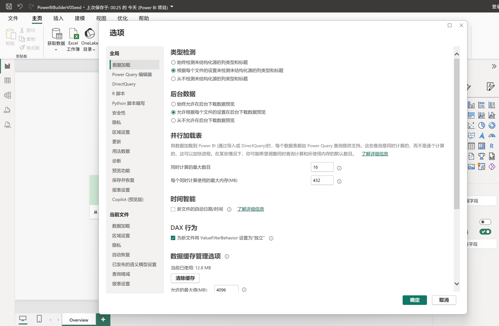
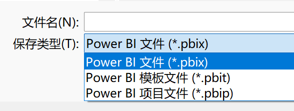

PBIPower BI Builder
01 / 14用 Codex
生成可直接打开的
Power BI 项目
Power BI Modeling MCP + PBIP/PBIR
从自然语言需求到 Desktop 报表
先看结果Codex 能生成
Power BI 项目吗？
可以。我们已跑通：自然语言 → M/语义模型/DAX → PBIR 页面 → PBIP → Desktop 打开、筛选、保存与重开。
AI 直出
3 张模型表
2 条关系
5 个度量值
6 个视觉对象
人工保留
业务确认
Desktop 打开/保存
安全弹窗
最终视觉确认
不是完全无人值守。当前是一条边界清晰、可落地的人机协作流程。
三个独立路径MCP、PBIP、数据源
不是一回事
Codex
↓ 启动
Modeling MCP
↓ 连接
Power BI Desktop
↓ 保存
PBIP 项目
MCP 不必放在项目里。放在稳定的用户工具目录即可。
Power BI Desktop两个勾选
两个取消
- 勾选：Power BI Project（.pbip）保存选项
- 勾选：使用增强的元数据格式存储报表（PBIR）
- 取消：当前文件的 Auto date/time
- 建议取消：新文件的自动日期/时间
预览功能修改后需要重启 Power BI Desktop。当前文件和全局新文件是两个不同位置。
照着设置PBIR 勾选
Auto date/time 取消
PBIR：勾选。报表页面会保存为可外部编辑的 definition 文件。

全局新文件 Auto date/time：取消。当前文件还要单独检查。
MCP 下载到哪里？
建议放在稳定、版本化的用户工具目录，不放进每个 Power BI 项目。
%LOCALAPPDATA%\Programs\
PowerBIModelingMCP\
0.5.0-beta.13\
└─ dist\powerbi-modeling-mcp.exe
- 来源：微软官方 Power BI Modeling MCP
- 版本：本次实测 0.5.0-beta.13
- 不同版本先运行 --help 核对参数
- 工具二进制不提交到业务 Git
下次无需重装为什么 MCP
可以跨项目复用？
[mcp_servers.powerbi-modeling-mcp]
command = "...\\powerbi-modeling-mcp.exe"
args = ["--start", "--require-confirmation"]
- Codex 记录的是 MCP exe 路径
- MCP 每次连接“当前打开”的 Desktop 实例
- 新 PBIP 项目不需要复制 MCP 文件
- 移动 exe 或修改配置后要重启 Codex
建议保留首次写操作确认；不要在没有备份时跳过安全确认。
当前必要前置先人工创建一次
空白 PBIP 种子

另存为：选择 Power BI 项目文件（*.pbip）。
- 唯一空白页面命名为 Overview
- 不预置业务表、DAX 和视觉对象
- 保存后纳入 Git，后续只复制不直接修改
流程 · 前半段需求 → 运行副本
→ MCP 建模
01提出需求与数据人工
02形成规格并复制种子Codex
03打开运行副本 PBIP人工
04M、模型、关系、DAXAI + MCP
注意：第 03–04 步中 Desktop 必须打开并保持。打开的是运行副本，不是种子原件。
Power Query/MImport PartitionRelationshipsDAX Measures
最容易漏的一步建模完成后
人工保存并关闭
05 人工操作
- 在 Power BI Desktop 中明确点击“保存”
- 等待保存完成，再关闭 Desktop
- 若关闭时再次询问，选择保存
- 模型修改此时才持久化到磁盘 TMDL
MCP 不会替你点击 Desktop 的保存按钮。没有这一步，后面可能拿不到完整模型文件。
流程 · 后半段关闭 Desktop
→ 生成 PBIR → 重开
06离线生成 PBIR 页面Codex
07重开、确认并保存人工
08整理完整交付项目可交付
- 页面布局、卡片、图表和切片器
- 字段与度量值绑定、视觉交互
- 人工处理凭据、隐私和系统弹窗
- 最终确认指标、筛选和页面可读性
第 06 步 Desktop 保持关闭，避免 Desktop 与 Codex 同时重写 PBIR。
开还是关？记住这 6 个状态
准备副本关闭复制种子
MCP 建模打开连接本地模型
模型落盘保存人工保存后关闭
生成 PBIR关闭避免并发重写
页面确认重开看视觉和筛选
最终输出保存Desktop 规范化
PBIP 必须和两个
同级目录一起交付
YourReport/
├─ YourReport.pbip 入口
├─ YourReport.Report/ PBIR
│ └─ definition/
└─ YourReport.SemanticModel/
└─ definition/ TMDL
- 不要只发送 `.pbip` 入口文件
- 保持 Report 和 SemanticModel 的相对位置
- 换机器后可能需要重绑本地数据路径和凭据
V0 已跑通AI 生成的不只是代码
而是可继续使用的报表项目
当前成立：本地 PBIP 的建模、DAX、PBIR 页面和 Desktop 使用闭环。
后续探索：零种子直出、Power BI Service 发布与更复杂报表。